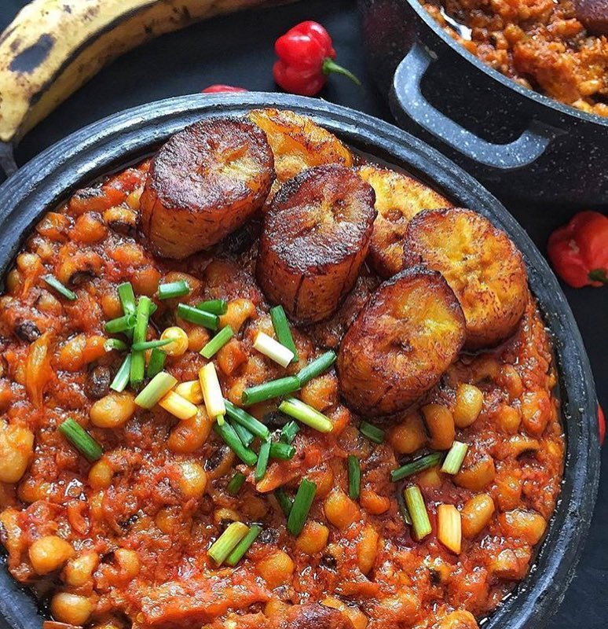
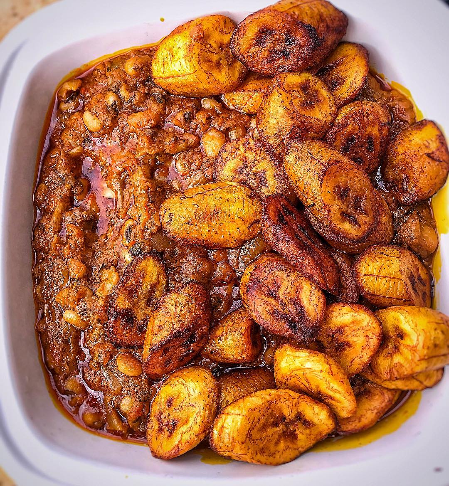

Beans and plantain is one of the nicest food in ghana.The food is boiled before it is prepared and the plantain is fried with oil in order to serve the meal.The reason i like this meal so much is that it is very tasty and nice when served hot is one of the best dish in this country ghana.
Ingredients for the beans
4 medium tomatoes
1 clove of pressed garlic
100ml red palm oil or vegetable oil
2 chillies (optional)
Salt to taste (± 1 seasoning cube)
1 large onion (chopped)
1 teaspoon of ground ginger
Ingredients for the plantain
Vegetable oil (for deep frying)
Some salt and/or pepper
4 very ripe plantains
Preparation of the beans
Wash and soak beans in cold water for 1 hour😀
Then, in a large pot and using 2 litres of water, boil your beans😂
The pot should be partially closed. After ± 5 minutes, reduce the heat and simmer the beans for ± 1,5 hours, or until they are soft (mushy even)✊
If more water is needed during the boil, add only boiling water to it. When the beans have cooked, drain them in a colander and set aside.😍
In another pot, heat the oil and add the onions, garlic, chillies and ginger🧄
After ± 3 minutes, stir in the mashed tomatoes and add your salt and pepper and/or seasoning cube🌶️
Add water and cook for ± 10 minutes before stirring in the beans. Cook, stirring intermittently for 15 more minutes. Now they are ready for serving😋.
Preparation of the plantain
Cut both ends and cut through skin length-wise
Peel. Cut into diagonal pieces. Season with a bit of salt and pepper (optional).
Heat oil and when it is hot, fry the plantain pieces
Toss them occasionally to ensure all are cooked
When they are all brown, remove and drain in kitchen paper. Serve.
Versions of the meal


How The Dish Finally Looks And Taste
Beans are very nice and sumptious.they taste very sweet and nice when prepared with plantain.
It looks yellowish when served with plantain beacuse palm oil is added to it so it looks garnishing.It served in a plate and sometimes u can eat it with egg as well.As you saw in the picture that is how beans looks very tasty and sumptious😋.
The above mentioned is done in different ways.This can be done by other means.hence the same is mentioned in below links